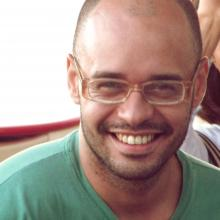
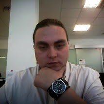
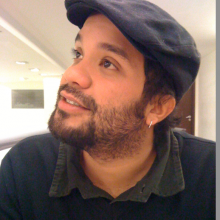
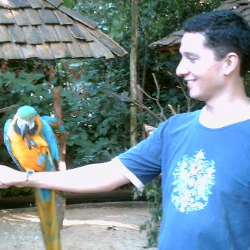
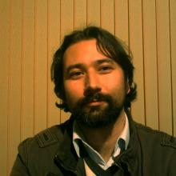
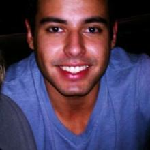
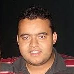
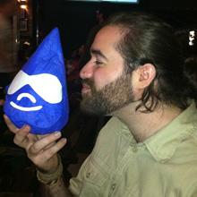

Sobre o evento
A DrupalCamp Floripa 2013 é um evento dedicado ao compartilhamento de conhecimentos em torno do Drupal com o intuito de reunir a comunidade, fomentar a troca de experiências, gerar conhecimento e negócios em torno da plataforma.
Nesta primeira edição do encontro teremos a presença de drupaleiros de várias regiões do Brasil.
O evento terá inicio 15 de Novembro às 14h e término previsto para aproximadamente às 19h. Continuando no dia 16 de Novembro no mesmo horário.
Todos os interessados estão convidados a participar deste evento de alto nível que irá abordar diversos temas relacionados ao Drupal com palestras voltadas tanto para iniciantes quanto para profissionais já experientes.
A proposta deste evento é ir além do modelo convencional de conferência e incentivar a inovação através de palestras, workshops, sprints de código e de um open space proporcionando maior intereação entre os participantes.
A ideia do Open Space é disponibilizar um espaço livre para que todos participem por meio de discussões e demais atividades que sejam propostas na hora pelos próprios participantes.
A DrupalCamp Floripa será realizado na sede da Taller, então não esqueça de levar roupa de banho para aproveitar a piscina!
Para mais detalhes, veja a programação do evento logo abaixo.
Não esqueça de seguir a @dcampfloripa no Twitter e também curtir nossa página no facebook.
Local
R. Laurindo Januário da Silveira, 1297 - Lagoa da Conceição, Florianópolis - SC, Brazil. Florianópolis, Santa Catarina
Palestrantes
-

15/11 - 14h30 Drupal Zero - Como fazer um blog ou site institucional sem saber programar!
Leonardo Silva @xulispa
Usa o Drupal como ferramenta de ampliação dos trabalhos desde 2006 e em 2008 se afirmou desenvolvedor web. Também integra a equipe de mantenedores do site Drupal Brasil. Formado em música, teatro, circo e produção cultural, é entusiasta em novas tecnologias e software livre.
-

15/11 - 16h Testes de performance
Handrus Stephan Nogueira @handrus
Apaixonado por web e open-source, trabalha com suas duas paixões a 10 anos sendo 6 deles com metodologias ágeis.Evangelista de testes automatizados, Drupal e de metodologias ágeis atualmente trabalha como Arquiteto de Softwares na CI&T, empresa Brasileira com presença global.
-

15/11 - 18h Introdução a Entities
Rafael Caceres @rafaelcaceres
Graduado em ciências da computação, trabalha com web desde 2001 e com Drupal, desde 2008. Evangelizador Lean e Ágil, é Co-Fundador e Diretor de Estratégias da Taller. Desenvolvedor e consultor, trabalhou em alguns dos maiores sites brasileiros de Drupal.
-
15/11 - 15h às 18h Code Sprint - Give back!
Renato Vasconcellos @revagomes
Publicitário formado pela PUCRS, técnico em informática, Ilustrador amador, web designer por hobby, multi-instrumentista, vegetariano e preocupado com o planeta, os animais e as pessoas. Desde 2007 trabalha com desenvolvimento para web com competências em várias áreas de atuação. Focado em desenvolvimento de aplicações web baseadas em Drupal desde 2008, trabalhou em projetos para grandes empresas brasileiras e hoje dedica boa parte do seu tempo livre para contribuir para o fortalecimento da comunidade Drupal no Brasil e na América Latina.
-

16/11 - 14h30 MailMaid: integrando email e a Web para uma colaboração ágil.
Nick Vidal @nickvidal
Engenheiro da Computação pela UFRGS (Universidade Federal do Rio Grande do Sul). Bastante ativo na comunidade de Software Livre e da comunidade Web, tendo participado como palestrante, voluntário e organizador de diversos eventos, tais como FISL, Latinoware, Consegi e World Wide Web Conference 2013. Membro da comunidade Drupal, tendo participado na DrupalCamp São Paulo, DrupalCamp Porto Alegre e DrupalCon Portland.
-

16/11 - 15h30 Live Test
Rodrigo Panchniack pagina pessoal
Coder desde os 8 anos de idade e aprendiz errátido de Perl e Drupal. Bacharel em Filosofia (2003) e Mestre em Linguística (2005) pela Universidade Federal de Santa Catarina. Foi estagiário de doutorado no Grupo de Computação do Conhecimento Léxico-gramatical da Universidade de Lisboa (2006-2007) e professor em cursos públicos e privados, para graduação e pós. Gosta dos coelhos, das palavras e da expressão back end, no bom sentido. De vez em quando, despeja códigos no drupal.org e no cpan.org.
-

16/11 - 17h Proximity Search com Drupal, Search API, Solr e Google Places
Vinicius Freitas
Gosta de software, pessoas e negócios. Especificamente, de como o software pode ajudar pessoas em seus negócios. Isso o levou a estudar Sistemas de Informação e logo a entrar no mundo da web. Depois de quatro projetos no primeiro emprego, juntou os esforços com outros três amigos que se dedicam ao conceito de uma "empresa ágil" e criar "killer web apps". É um geek empreendedor viciado em soluções.
-

16/11 - 18h Cache no Drupal
Leandro Nunes @lnunesbr
Trabalha com web há longos anos, é entusiasta de software livre e é apaixonado por drupal. Já minitrou palestras em Drupalcamps pela américa latina, e contribui com a comunidade Drupal através de módulos, patches e traduções. Santista fanático, gosta de video games e de programar.
-

16/11 - 19h às 21h Workshop - Desenvolvimento Drupal em equipe
Sebastian Ferrari @sebas5384
Desenvolvedor Web Drupal desde 2005. Especializado em criação e consultoria de portais de muita audiência e com grande quantidade de conteúdo usando Drupal como CMS e Framework. Membro da comunidade Drupal desde 2009 como "Organization Member", onde contribui com módulos e patches para melhorar ou corrigir módulos de outros contribuidores.
-
16/11 - 19h às 21h Workshop - Desenvolvimento Drupal em equipe
Rafael Caceres @rafaelcaceres
Graduado em ciências da computação, trabalha com web desde 2001 e com Drupal, desde 2008. Evangelizador Lean e Ágil, é Co-Fundador e Diretor de Estratégias da Taller. Desenvolvedor e consultor, trabalhou em alguns dos maiores sites brasileiros de Drupal.
Programação
Veja o que estamos planejando para o evento.
| Horário | Slot | Descrição |
|---|---|---|
| 15/11 - 13h40 | Check-in | - |
| 15/11 - 14h30 | Drupal Zero - Como fazer um blog ou site institucional sem saber programar! Taller | Voltada para quem não conhece o Drupal, a palestra aborda os conceitos primários, o que é, como funciona, requisitos para instalação e uso e estrutura de arquivos. Durante a apresentação é feito um site institucional, com blog e formulário de contato, de maneira interativa, onde os participantes têm a oportunidade de aprender, com a mão na massa, a fazer o site sem precisar saber programação. |
| 15/11 - 16h | Testes de performance Ci&T | Qual a diferença entre testes de stress e carga? Como posso planejar meus testes de performance? Que ferramentas utilizar para verificar a performance do meu site? E como desenvolver com performance em mente? Nessa palestra essas perguntas serão discutidas, e algumas abordagens demonstradas. Um hands-on com muita discussão. |
| 15/11 - 17h30 | Coffee-break | - |
| 15/11 - 18h | Introdução a Entities Taller | Entity é a abstração de conteúdo que foi introduzida no drupal 7. Essa abstração permite que fields sejam anexados somente a bundles, como no drupal 6, mas a qualquer entity. E isso não é tudo. Esse workshop visa dar uma introdução básica ao conceito de Entity, desde o trabalho com Entities do core até a criação de nossas próprias. Além disso, será mostrado como estender as classes e controllers das entities, como criar interfaces administrativas rápido é fácil, como criar visualizações e como ter um acesso mais orientado a objetos a isso tudo. |
| 15/11 - 15h às 18h | Code Sprint - Give back! Taller | Neste espaço vamos contribuir com patches para o Drupal. Será feita uma introdução sobre como postar patches no drupal.org e então vamos escolher as issues para resolvermos. Pre-requisitos: Notebook/Laptop |
| 15/11 - 19h | Encerramento | - |
| 16/11 - 13h40 | Check-in | - |
| 16/11 - 14h30 | MailMaid: integrando email e a Web para uma colaboração ágil. MailMaid | MailMaid é uma distribuição Drupal que integra email e a Web para facilitar a colaboração. A vantagem do email é que ele é um meio de comunicação extremamente popular e fácil de usar. Porém, é difícil gerenciar um projeto via email, principalmente quanto existem diversas threads e pessoas. É neste ponto que a integração com a Web torna-se vantajosa. |
| 16/11 - 15h30 | Live Test Taller | A medida que o projeto cresce, novas funcionalidades podem prejudicar as anteriores. Para avançar com segurança, é necessário realizar testes de regressão, mas fazer isso manualmente é tão arriscado quando a roleta russa. Por isso, esta palestra apresenta o Self Test, um módulo Drupal infalível para a automatização de testes, com base em gherkin, watir, git hook e ruby. |
| 16/11 - 16h30 | Coffee-break | - |
| 16/11 - 17h | Proximity Search com Drupal, Search API, Solr e Google Places Taller | |
| 16/11 - 18h | Cache no Drupal Itelios | A idéia é demonstrar de maneira geral como o cache do drupal funciona, e algumas dicas e práticas para melhorar o desempenho do seu site. Slides: http://slid.es/leandronunes/drupalcamp-floripa |
| 16/11 - 19h às 21h | Workshop - Desenvolvimento Drupal em equipe Taller | A criação de um site com Drupal, pode ser feita por um “drupaleiro” com o mínimo de processos para publicar novas funcionalidades ou melhorias... tudo bem! Mas, o que acontece quando trabalhamos com um time com diferentes skills, por exemplo, um front-end, dois devs de backend e um tester? Aí coisa pode ficar feia, então, se você ou seu time, gasta mais tempo tendo que lidar com problemas como, aparente perda de funcionalidades, problemas que surgem “do nada”, publicação de novas funcionalidades em um site já em produção... sem contar a manutenção de longo prazo, que fica quase impossível de manter. Aprenda a implementar alguns processos e utilização de ferramentas disponíveis que ajudam a garantir a eficiência do time, entregando código de qualidade. Pre-requisitos: Notebook/Laptop com GIT instalado. |
| 16/11 - 19h às 21h | Workshop - Desenvolvimento Drupal em equipe Taller | A criação de um site com Drupal, pode ser feita por um “drupaleiro” com o mínimo de processos para publicar novas funcionalidades ou melhorias... tudo bem! Mas, o que acontece quando trabalhamos com um time com diferentes skills, por exemplo, um front-end, dois devs de backend e um tester? Aí coisa pode ficar feia, então, se você ou seu time, gasta mais tempo tendo que lidar com problemas como, aparente perda de funcionalidades, problemas que surgem “do nada”, publicação de novas funcionalidades em um site já em produção... sem contar a manutenção de longo prazo, que fica quase impossível de manter. Aprenda a implementar alguns processos e utilização de ferramentas disponíveis que ajudam a garantir a eficiência do time, entregando código de qualidade. Pre-requisitos: Notebook/Laptop com GIT instalado. |
| 16/11 - 21h | Encerramento | - |
Contato
Caso tenha alguma dúvida entre em contato conosco através do email drupalcampfloripa@taller.net.br.